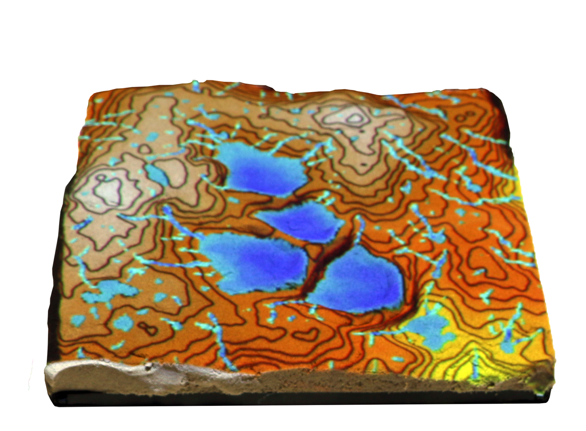
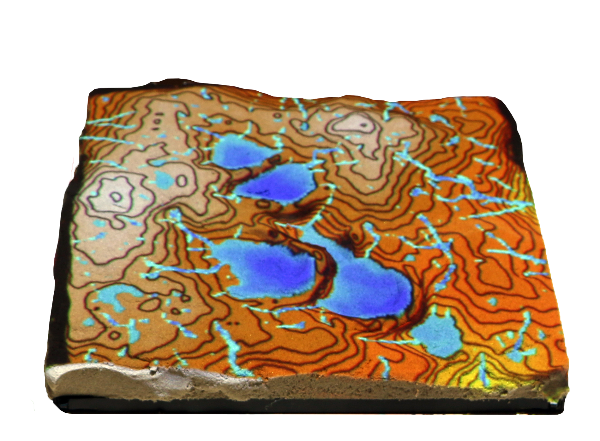
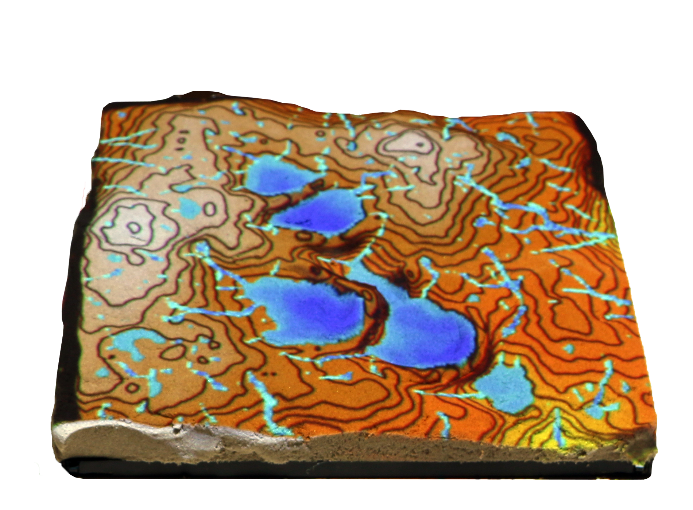
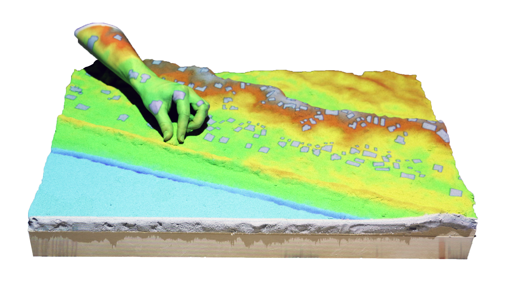
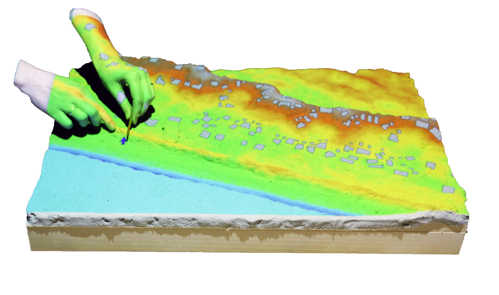
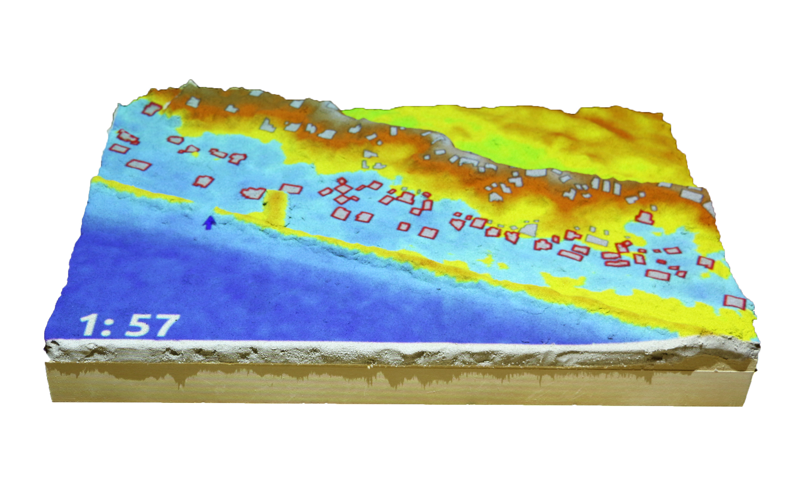
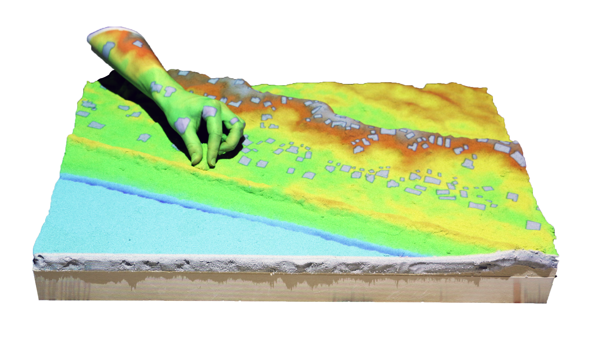
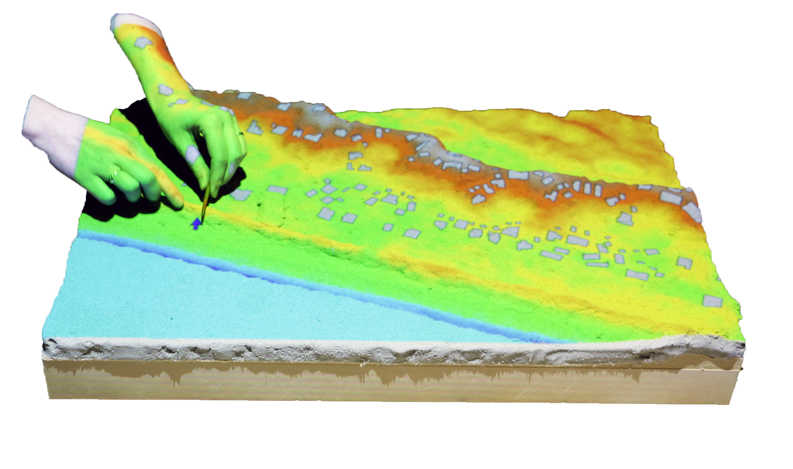
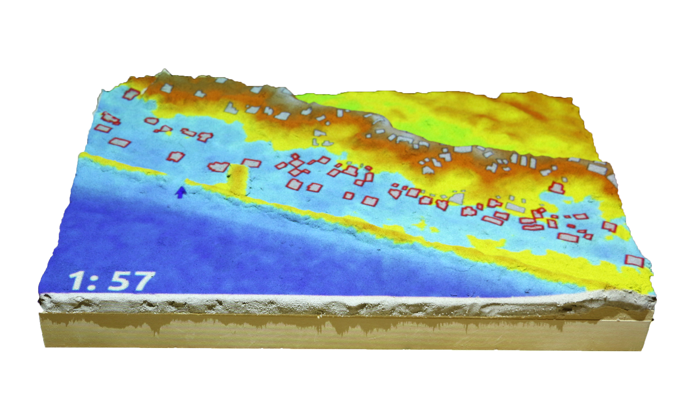

Coffee & Viz
Serious Gaming with Tangible Landscape
Brendan Harmon, Anna Petrasova & Vaclav Petras

Computational modeling
Developing games with
Tangible Landscape
A tangible user interface powered by open source GIS

Coupling a digital and physical model of a landscape
Physically manifesting digital data so that you can intuitively feel and shape it with your hands

 

Near real-time interaction
Intuitive scientific modeling with Tangible Landscape


Scientific gaming
To make scientific problem solving a game we need:
- goals
- rules
- interactivity
- challenging tasks
- scores
Coastal game
 




